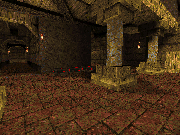
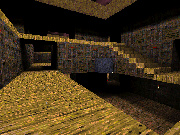
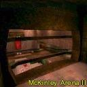

Clan 9 From Outer Space
Clan 9 From Outer Space Custom Maps @ kitty1
Custom Maps @ kitty1 ClanRing Tourney 3 Demos
ClanRing Tourney 3 DemosAt one stretch early in the life of Quake, and again for Quake 3, we used one or more of the Mothership servers at kitty1.stanford.edu to promote custom maps in various ways. In both cases, it was a time when most of the official maps were losing their charm but the player community hadn't yet settled on a canon of custom maps.
So the maps here are in a bit of an odd spot. As far as the Quake maps are concerned, none of them would show up in a collection of greatest maps by today's tastes. But at the time, they were among the best of what was out there. They're a time capsule of DM map design before the "overlapping multilevel atriums" school really took over. In the case of the Quake 3 maps, there are a few classics in the mix, but the majority are still probably familiar-looking maps that you haven't seen for quite a while.
I'm going to frontload the download links as usual, but there's a lot of relevant info below!
"The Experimental Pits" was an alternate server at kitty1 that featured mods and custom maps. It had its best run from early to mid 1997 when it was used in a talent search for new FFA maps. The original list of candidates was over 100 maps long, which was whittled down through a process of walkthroughs, then playing with bots, then LAN games, then finally playtesting online with kitty1 regulars.
For extra authenticity here I'm going to re-use the GIFs that were featured on the playtest site and eventually on the Experimental Pits webpage. These were what sexy teaser images looked like in 1997! First, the seven maps that made it into the rotation:
anihous2 |
clean01 |
dcdm3 |
dcdm5a |
deguello |
kndycity |
trifor |
Six maps made it to the final online playtest before being cut. We were really looking for a small-ish rotation so we would drop a map for a technical glitch or other small reasons. Or in the case of dakyne, because it was going to be included in another map pack (for the Painkeep mod if I'm remembering correctly) and so we wanted to give other maps a shot. Anyway these maps were pretty much on par with those above:
critters |
dakyne |
 martim5 |
|  muny06 |
obiwan |
satyr1a |
If you want to poke around inside these maps, you can download the two sets as the Quake DM Oldies package, Side A and Side B. And for a good simulation of 1997 FFA, you can use the Omicron bots mod to fill them with AI opponents; more info about that in the guide to deathmatch with bots.
By the time Quake 3 rolled around, map design conventions were more solid right out of the gate, even if not yet dialed in for Quake 3 specifically. So we had several interesting candidates on hand. Serverside mods also soon provided the ability to vote to play on maps that were not in the main rotation.
So rather than setting up a dedicated custom map rotation, we used our server's website and news blog to promote a set of custom maps that were available for voting. To make it more likely for these maps to be used, we aimed at a small playercount, so we were looking for maps that would work for 1-on-1 or possibly small teams/FFA.
Some of these maps were or would be part of the CPMA map packs: cpm1-3, cpm5-8, and deckt1 (cpm10). ztn3dm1, which eventually became one of the most-used custom maps, was also in the voting pool. In addition we had these:
addict |
bal3dm1 |
bal3dm2 |
cq3dm1 |
devdm2 |
dmmq3dm5a |
lae3dm2 |
lun3dm2 |
mrcq3t3 |
 q3tbdm4 |
r_tourney3i |
saiko_tourney1a |
skull |
tig_den |
unitooldm3a |
ztn3dm2 |
(Also oehm, "The Ruins of Oehm", which had niche popularity for a while among folks looking for a map with some old-school connectivity and verticality... but I can't find that map. It's disappeared off the face of the net.)
You can download these as the Quake 3 DM Oldies package. Note that if you're going to be using Quake 3's Skirmish menu to check them out, it's nice to have a menu that will support and show a lot of maps. The CPMA mod will take care of that, or if you don't have CPMA then the More Maps mod is a lightweight fix.
If a map doesn't show up in the Skirmish menu, it wasn't properly packaged with the info needed to put it there. You can still play the map; easiest way is to start up a game with your desired gametype and bot roster on some other map, then bring down the console and use the "map" command to switch to the desired map. (For example, "map addict".)
The CTF map situation was more up in the air; Q3CTF players wanted bigger and more complex maps, but were still coming to terms with the lack of a grapple. On our CTF server we again just made maps available through voting, but we didn't feel restricted to small maps... more CTF players were likely to have (or be willing to download) custom maps.
The first few Threewave maps for Q3CTF had been released (as q3wctf1-3) so those were in the pool. We also had several maps that would eventually be released in Threewave community packs: japanctf (q3wcp1), schadctf (q3wcp4), q3mexxctf1 (q3wcp6), and harshg (q3wcp8). And of course jlctf1, because, why not? In addition we had these:
dboxctf2 |
gefsctf2 |
gmctf1 |
halctf2b |
halctf4b |
hod_ctf |
jnyctf1 |
q3mlctf1 |
q3mlctf2 |
q3mlctf3 |
|  q3mlctf4 |
q3rctf |
q3sctf_hs |
quartzctf1 |
riscq3ctf1 |
s20ctf1 |
saltctf2 |
You can download these as the Quake 3 CTF Oldies package. Same comments as for the DM maps above w.r.t. using the Skirmish menu. And check the included README.txt for some words about texture dependencies.
In the interest of sorting out the best maps, I also hosted a "CTF Map of the Week" event: a "quick look" posted with a rundown of a map's features, followed by an evening of playing just that map, and then some forum discussion. Those were good times, but we were only able to run three MOTWs before difficulties with the Stanford network gateway finally caused me to shut down the kitty1 servers. The MOTW forum discussions are lost, but the "quick looks" at least are still around:

 ) except where indicated otherwise
) except where indicated otherwise